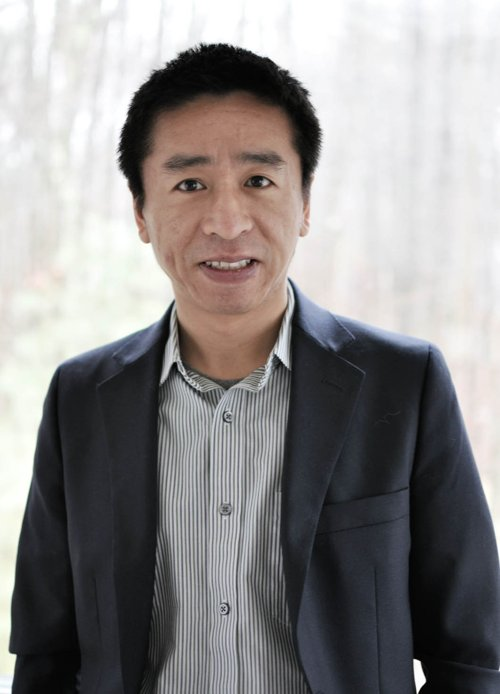
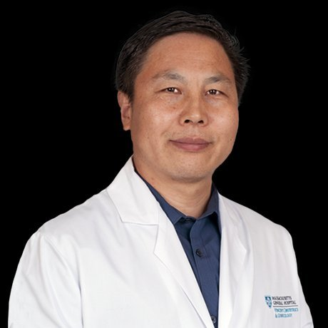

Developing Hippo/YAP-targeted therapeutics for gynecological cancers and fertility preservation, built on more than a decade of peer-reviewed research into the Hippo/YAP pathway in the female reproductive tract.
Research led by our co-founder, Dr. Cheng Wang, has shown that the Hippo/YAP pathway plays a central role in female reproductive tract disease. Hippo Biosciences aims to translate these discoveries into new therapies for women.
Targeting the Hippo/YAP pathway in high-grade serous ovarian cancer (HGSC). YAP was identified as a critical contributor to HGSC development initiated in fallopian tube secretory epithelial cells.
HGSCFallopian TubeAiming to protect and restore ovarian function in young female cancer survivors. Granulosa cell–specific Yap1 knockout studies showed that YAP is essential for granulosa cell fate and follicle development.
Cancer SurvivorsGranulosa CellsYAP1 hyperactivation can initiate invasive cervical carcinoma independent of HPV. The YAP1–LATS2 feedback loop maintains tissue homeostasis; its disruption drives malignant transformation.
HPV InteractionYAP1–LATS2 Loop"The disrupted Hippo/YAP signaling pathway is a critical, targetable vulnerability across female reproductive tract disease — from cancer to infertility. Our mission is to translate this insight into transformative therapies for women."
Research in the Wang Laboratory has identified the Hippo/YAP pathway as a key regulator of ovarian, fallopian tube, and cervical tissue — in health and disease.
Hippo Biosciences was founded by a reproductive biologist who has spent more than a decade studying the Hippo/YAP pathway, and a biotech operator and investor with deep experience building and financing life sciences companies.

Sean co-founded Hippo Biosciences and leads the company's strategy, financing, and partnerships. He brings more than a decade of senior operating experience in biotechnology and medical devices, most recently as Vice President of Business Development and Operations at Harvard Apparatus Regenerative Technology (Biostage), a clinical-stage regenerative medicine company, following earlier roles at Smith & Nephew and Bioventus. He is a named inventor on multiple patents in organ regeneration.
Sean is also an experienced life sciences investor and investment banker. He is General Partner of Axion Ventures, an early-stage AI and healthcare fund, and a Managing Director at Castle Placement, a FINRA/SIPC-registered private capital investment bank, where he advises life sciences, medtech, and clean energy companies on private capital raises. He is a Partner and M&A advisor at SBB Capital Partners, with long-standing relationships among U.S. and Asian institutional investors.
He holds a Ph.D. in materials science from the University of New Hampshire and an MBA from Babson College.

Dr. Wang is a reproductive biologist and the principal architect of the Hippo/YAP reproductive tract research program that underpins Hippo Biosciences. His laboratory was among the first to establish the role of Hippo/YAP signaling in ovarian follicle development, high-grade serous ovarian cancer, and cervical cancer.
His work has been published in journals including Cell Reports, EMBO Reports, EMBO Molecular Medicine, Oncogene, and FASEB Journal, and has been supported by the National Institutes of Health and private foundations.
Peer-reviewed research from the Wang Laboratory underpinning our programs.
We welcome inquiries from scientists, clinicians, investors, and partners aligned with our mission.
Email Us